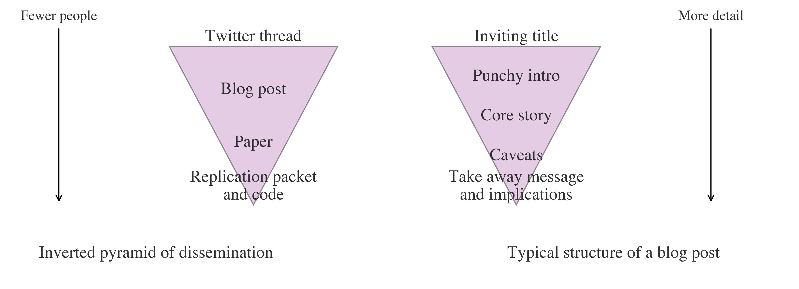

Research Blog Posts
In this chapter, you will find hints and tips for writing impactful blog posts that summarise research or analysis. To make the distinction with blogging more generally, the chapter is called ‘research blog posts’, but the advice could apply to any complete analytical project. As in other chapters on craft, although the text below may say ‘do this’ or ‘don’t do that’, there are few universal rules in writing and what’s appropriate for your project may be something completely different. But following these guidelines should give you a solid place to start if you need one.
Your first question is likely to be “why blog about my research?”, and it’s a good one. Blogs are a really useful way of getting your work to a wider audience, including the general public—either directly or via journalists and aggregators. They will drive people to your research, make your research findings more shareable, and, as a side benefit, help you improve your communication skills too. The rest of the chapter will, hopefully, take some of the pain out of blogging.
This chapter has benefitted from numerous sources, including conversations with John Lewis at the Bank of England, this LSE blog on writing blogposts, and another blog with tips on research blog posts from the transient spaces and cities group at Innsbruck.
Dissemination
The reason most people take the trouble to present and summarise their analytical work in the form of a research blog post is to help find a wider audience for it.
It’s helpful to think of how many people will engage with the dissemination outputs you create as following the inverted pyramid of research dissemination. Note that these are outputs you create and control, so media articles or newsletters that others have written don’t appear in this model.
At the top layer of the pyramid, you can draw a large number of people in via social media, including people who might not otherwise have ever thought about or seen what you’re doing. This is quite unusual; for a blog post, they might have at least decided to visit a related website, but for social media they could just be scrolling through Twitter or TikTok.
At the next level down in the pyramid, you get another opportunity to pull probably slightly fewer people into somewhat more detail with a blog post, the subject of this chapter.
Below the blog post layer is the paper and, given a large number of papers go uncited, you may be lucky if tens of people read that front-to-back. Finally, right at the bottom—though no less useless for being so—is the code and/or replication packet, to be seen by a small number.
Each stage of the inverted pyramid is valuable, but it’s important to recognise that:
- without the bottom layers, the top layers might not be very solid, so be wary of putting out arguments and conclusions that don’t rest on deeper analysis
- most people will only ever engage with the upper layers; they don’t have time to read your paper but they might read a thread or blog post
- more people will know about your work if those upper layers exist, and they will push more people down to lower layers
- most people doing analysis or research want people to read it and be influenced by it
In this view of dissemination, you can think of a research blog post as a poster for your deeper analysis: it is a punchier, shorter, and likely more exciting version that can also signposts people to your paper should you catch their attention. Popular blog site VoxEU uses the description “research-based policy analysis and commentary”.
Tips for Writing a Research Blog Post
Alongside the inverted pyramid of dissemination, above, there is another inverted pyramid that gives a suggested structure for research blog posts. This following the classic inverted pyramid of news as used by journalists. Just as with dissemination of research more broadly, more eyeballs will reach the top layer than the bottom, and more of the detail will emerge in the bottom layers.
If it is to be effective, your blog post cannot be too long; 800 words is a good target, and definitely no more than 1500 words. Many places that you would want to publish the blog will have limits anyway, but even if it’s on your own website, if you’re summarising a research project you probably want to make it substantially shorter than the paper.
Let’s run over some other general tips for writing good research blog posts:
Don’t just repeat your paper; for a start, there’s not space to do this! You need to pick out one key feature and focus on it.
Think about your audience. It’s going to be a lot wider than your paper, and it’s going to depend a lot on the venue where the post appears; likewise, the platform you choose to put out your post will determine what audience you will reach.
Motivate the piece for a wider audience. While for a paper or deep and detailed piece of analysis, you may be able to rely on others as passionate about the topic or question as you are to get into it of their own volition, you will need to link your work to broader issues and bigger debates if you want to get readers.
If someone is reading an economics or coding or even analysis blog, then you probably can assume they have some analytical training: so keep the motivation crisp, specific, and short.
Good blogs tell a story. Craft the post into a narrative that puts the spotlight on the main finding that you want to communicate.
While many use a more formal style of writing for papers, it’s good to use a more punchy and relaxed style when writing a blog.
Keep it concise.
Mostly use the active voice, so that the subject of the verb performs the action (rather than the subject receiving the action). An example of the difference is “The dog chased the economist” versus “The economist was chased by the dog” for active and passive respectively.
There are many ways to make your paragraphs lead a reader clearly through your post, but a solid and reliable way to do this is to ensure that the whole piece would make sense, and follow logically, if you only read the first sentence of each paragraph.
Link to other blogs and research freely.
Don’t use jargon or acronyms! Be really strict with your prose; you may not even realise that some words you write frequently are jargon.
Well-written and engaging blogs will have a much bigger impact. Writing concise, punchy pieces does take time and practice though.
Figures and tables (floats) should be used sparingly, be really clear, and should tell the story. Take a look at the chapter on narrative data visualisation, Narrative Data Visualisation, to get a sense of what works. Any floats should be able to stand alone without the text too. If re-using floats from a paper or report, strip out elements that are superfluous to the narrative of the post.
Wherever possible, use vector graphics for your figures. This means using formats such as svg instead of png. Most plotting libraries will write to many output formats, including svg.
Some blog sites require that references to other work only appear as hyperlinks—something to bear in mind as you’re drafting.
Just as with papers, readers of your blog post will want to know what is different today, now you’ve done this work, as compared to yesterday, when you hadn’t. Is what you discovered a big effect? Does it have big implications?
The threshold is a lot lower than you think! A blog post that isn’t perfect will still drive more traffic to your work than one that wins a Pulitzer. Also, experience is easily the best way to improve for next time.
Finally, two extremely good general resources on writing are Zinsser (2006) and White and Strunk (1972).
Structuring a Research Blog Post
The blog post pyramid in the figure above gives a good structure to work from, although experienced writers may want to get more creative.
Let’s run through the parts:
Inviting title: this needs to strike a balance between being total clickbait and accurately reflecting the content of the post. Clickbait titles would include purposefully controversial opinions or lists along the lines of “Here are 9 things you never knew about central bank reserves; number 7 will shock you”. In the internet age, it’s also a good idea if it contains keywords that will help the post be picked up by a Google search: what would you search for to find blog posts on this topic?
Punchy intro: reel the reader in within the first few sentences and then get straight onto the main message and headlines. A three or four sentence summary opening paragraph works well; use it like a shop window for the rest of your piece, covering everything the reader is likely to find inside. Another way to think about it is as a trailer for the rest of the piece. Of course, your opening needs to naturally lead into the rest of the blog post too.
Core story: this is where you can relay what you did, found out, or changed in more detail. This is where you might have a sentence or two about the methodology, unless the methodology is the story. It’s also where the results and evidence that support the argument or narrative of the overall piece will appear.
Caveats: there are limitations to any study or analysis, and sometimes they’re important, and need to be included. Journalists read and notice blogs so, if you don’t want your work to be misunderstood, you do need to be careful about what you’re not saying or where there are obvious leaps in reasoning that can not be justified by the evidence presented. You should be frank about the shortcomings; you don’t want the economics equivalent of the ‘in mice’ treatment.
Take away message and implications: as with the conclusion in a paper, this is the point where you’re allowed to be a (tiny) bit more speculative, draw some wider conclusions, and connect what you’ve found up with what the bigger picture looks like post your stunning insights. Extra points if you can cleverly bring the end of the piece full circle to an idea or notion that you brought in right at the beginning: this gives readers the written equivalent of a perfect cadence in music; the piece sounds finished. And, like in music, you may wish to vary this technique for effect.
There are many bits of your paper that won’t make it into the blog post. Much of the methodology will need to be jettisoned, ditto for the literature section unless is extremely relevant to the story you’re telling.
Where to put your blog piece
So you’ve got an idea for a killer blog summarising your recent paper. Where can you unleash your blog piece on the world?
The first option is to host it yourself on your own website or on a free service such as Google’s Blogger. If you want to host a blog (and homepage) yourself, a combination of GitHub Pages and Jekyll is a good way to do it; the Jekyll folio theme is particularly popular and will automatically ingest a .bib file of references but there are plenty of others. Once setup, you write blogs in markdown, put them in a folder, and commit them: the rest is automatic. Another very strong option is to use quarto and GitHub Pages, especially if you want to blog using a lot of code and self-host. You can read more about this tool in Combining Code and Text in Quarto Markdown.
Now although you get lots of control with a self-hosted blog, there are major downsides. Unless you have a large social media following already, posts on there might not find many readers. So what are your other options?
If you are at a central bank or have a co-author who is, many of them have blogs with big readerships. Bank Underground (Bank of England) and Liberty Street Economics (New York Fed) are two worth checking out. Many other institutions have blogs too, like various parts of the UK public sector—the ONS’ blog, for instance. Most universities have some sort of blog—CAGE at the University of Warwick is a good example—and, for universities that don’t have their own, there’s The Conversation.
VoxEU has a very large economics readership and is solely focused on research blogs but the website is hardly encouraging when it comes to submissions: “Most Vox columns are commissioned directly by the Editor-in-Chief, but Vox does post a few unsolicited columns.” There’s also a VoxDev for development economics, and, happily, this outlet actively invites researchers to submit pieces.
Bigger overall but less likely to reach an economics audience specifically, there’s Medium and, for a more coding-oriented crowd, Dev.to.